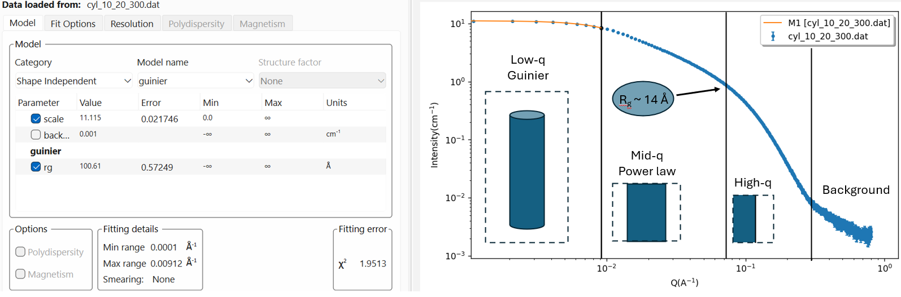
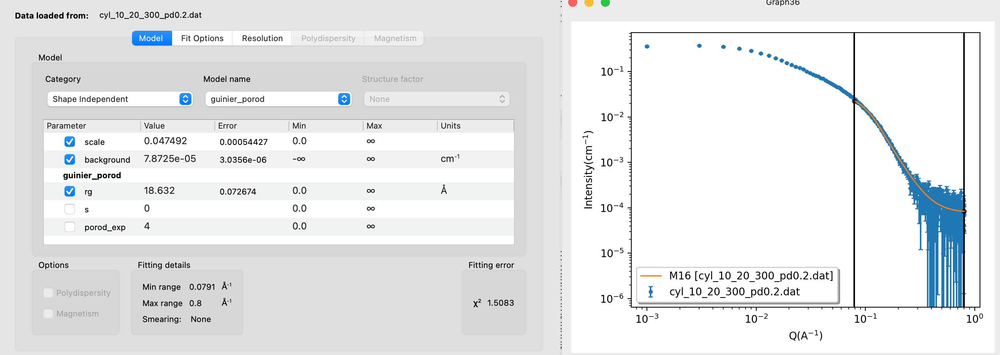

Home
Tutorial: Tutorial Hierarchical Structures
Contributors: Andreas Haahr Larsen

Sketch of nanoparticles aggregating into a branches network. This is an example of a hierarchical structure, as is has characteristic dimensions at different length scales, including the nanoparticle diameter, the overall size of the aggregate, and the dimensionality of the branched network. Figure reproduced from (Anitas, 2019).
Before you start
- Download and install SasView (on MacOS: you need to install Xcode first)
- Knowledge of Guinier and radius of gyration, $R_g$. See the Primary data analysis tutorial.
- Knowledge of the general Porod limit, $I(q)\propto q^{-4}$ for high values of $q$.
- You should also be familiar with basic fitting in SasView. See the Spheres tutorial.
- You should be able to plot data and adjust the scales (in a program of your own choice).
- You should be familiar with Shape2SAS. See the Spheres or the Shapes tutorial.
Learning outcomes
Learn to model SAXS or SANS data from hierarchical structures using shape-independent models. After the tutorial you should be able to:- Explain how to determine different structural levels from SAXS or SANS data.
- Fit data with a combination of exponential functions and Guiner regions.
- Understand what structural information about the sample that can be derived from the fits.
- Fit saxs/sans data using the unified fit model.
Introductory remarks
SAXS and SANS is unique in being able to probe both the outer structure and internal structure of gels, powders, colloids or particles in solution. Different structural levels can be probed at different angles, or $q$-values.
In some cases, an exact model may be generated to model the data, using a combination of form factors and structure factors, even for complex models. But if knowledge is limited or a detailed model is not necessary, one may use
Examples of hierarchical structures include dietary proteins (Tiong et al., 2025), and casein micelles from milk (Pedersen et al.,2022). The nanoparticles in the illustration in the top of the page is another example. They form a branches structure, that growth like a mass fractal.
Part I: Slopes and dimension
In this exercise, you learn to think in terms of dimensions and structural hierarchies (rather than shapes). Go to Shape2SAS and simulate an cylinder with semiaxes a,b=10 Å,20 Å and length c=300 Å. Give the sample a relative polydispersity of 0.2 (or use this simulated data).You could fit it with a form factor for a cylinder, but instead, you should consider it a hierarchical structure. Plot the data on a log-log plot, and consider the regions, starting from the lowest $q$ values, marking the structural levels:
- Flat region (low q values), indicating that the largest dimension (300 Å) can be retrieved from data.
- Structural level 1: the q-value at which the flat region ends (change to another slope) reveals the largest dimensions in the sample (here: cylinder length). The data now has a slope of -1, which is characteristic for 1-dimensional structures such as rods or cylinders.
- Structual level 2: the end of the slope -1 region marks another dimension, namely the cylinder cross section. Next slope is approximately -4, which is the Porod limit (for smooth surfaces).
- Background: at the highest values of q, the data reaches a constant background level.


Part II: Fit data using the unified model
The features found in Part I are general for SAXS and SANS data, leading to the idea of a unified fit model (Beaucage, 1995). Use the unified model (Category: Shape Independent) with 2 structural levels to fit the simulated data. The model has many parameters, so use may use a stepwise approach, as outlined below.- Fitting with unified fit model:
- Structural Levels: Determine the number of structural levels.
- Slopes: Estimate the slopes (power1, power2,...), e.g by fitting a power law to each region.
- Radii of gyration: Radii of gyration can be determined (e.g. as done in Part I).
- Background: Provide a good estimate of the constant background level.
- Scaling parameters for Guinier (G): Set all scalings (G1,G2,...) and (B1,B2,...) to zero, except G for the highest level (largest $q$). Adjust G to fit the Guinier region. continue with next level(s).
- Scaling parameters for slopes (B): Adjust B's, one at a time until the model is close to the data.
- Fit(!): Fit the parameters. Remember not to fit the overall scale, as it is correlated to the G's and B's.
- Note: If you do not see a flat region followed by a change in slope, the largest dimension is not resolved. You may still use the unified model, but cannot determine the $R_g$ for the first structural level (largest dimension), but may still determine its dimensionality from the slope.
For more complex samples, the $\chi^2$ may be relatively high, as the model is approximate and only describes overall structural features (no shape, only sizse and dimensionality).
Part III: Mixture
In the following exercise, we will look at a combined USANS/SANS dataset of Pea protein (plant-based protein with potential to replace animal protein). The protein is in solution. Determine structural characteristics and fit the data. You may use the following step-by-step guide:- Step 1: visual inspection. From visual inspection (remember: log-log plot), determine any slopes or Guinier regions. Identify any Guinier regions (to estimate $R_g$) or slopes. Data seems to contain a slope at low-$q$, followed by a Guinier region and end in a background level.
- Step 2: estimate values Estimate slope(s), $R_g$ value(s), and the background level. In this step, you may do some simple fitting of specific q-ranges, as in Part I
- Step 3: choose model The initial slope is high, meaning that it may be a mix of structures, with the high slope representing large aggregates, and the Guinier representing smaller particles in solution. A mix of structures (as opposed to one hierarchical structure) can be fitted with a sum - one model for each structure.
Here, you can combine a power law (for the low-q slope) and guinier_porod. In SasView: Fitting > Add/Multiply models. Select the two models to combine, give the model a name and a description (could be the same as the name, or a space, if you are lazy). - Step 4: guess parameters. Insert values from step 2 and adjust (compote, no fitting yet) until you have reasonable consistency with data.
Set the parameter $s$ to zero, as the proteins are expected to be globular. - Step 5: fit(!): Refine the parameters. You may fix some parameters (besides from s and the scale, or restrain parameters to a reasonable interval using min and max columns).
You may get something similar to this. The "ripples" at $q\sim0.004$ comes from SANS resolution effects at overlapping setting that are merged into a single datafile.
Challenges
- Challenge 1: You have measured a sample of nanodiamond powder with SAXS. Fit the data, and describe the structural levels in terms of size and dimensionality (you may ignore the Bragg peak at high $q$, or you can include it in your fit, e.g. by adding a Gaussian peak).
- Challenge 2: The pea protein from Part III was also measured in the gel phase (as opposed to in solution). Describe the structural differences between the solution and gel states. Download the SAXS data of pea protein in the gel state here.
Perspectives
- The unified fit model and other shape-independent models are also available in the Irena software for fitting saxs/sans data. You may use this software for the tutorial (video guide by Ian Llavsky for using the unified fit in Irena).
Help and feedback
Help us improve the tutorials by- Reporting issues and bugs via our GitHub page. This could be typos, dead links etc., but also insufficient information or unclear instructions.
- Suggesting new tutorials/additions/improvements in the SAStutorials forum.
- Posting or answering questions in the SAStutorials forum.